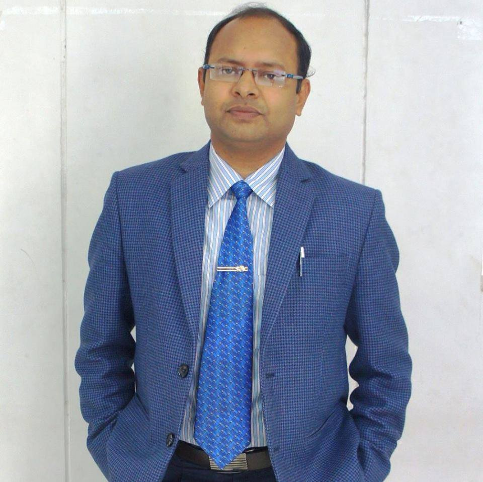
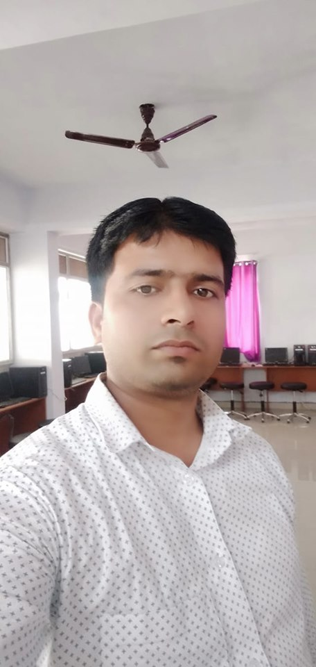
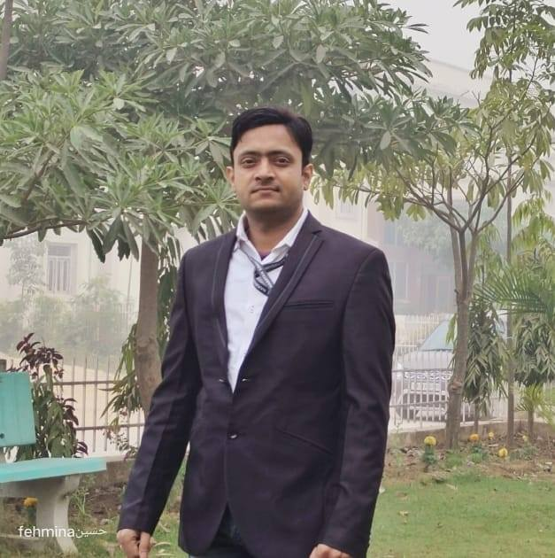
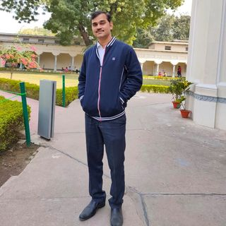

HOD OF IT
Dr. Abhishek Srivastava
Ph.D
Head Of Inforation Technlogy
The department of Information Technology was established in the year 2018 with an intake of 20 students. Presently the intake has been raised to 60.The department has well established lab, infrastructure and highly experienced faculty members, drawn from various popular colleges.
Dr. Abhishek Srivastava had worked in various national and premiere colleges in the country. He has rich teaching experience of 10 years in the fields of Information Technology. He completed his Masters Degree with Honours from University Of Allahabad and obtained his Ph. D in Information Technology from Same University.He conducted various workshops and faculty developments programmes.
FACULTIES OF IT
Mr. Aman Routh
Faculty Of Information Technology
Mr. Aman Routh had worked in companies like Microsoft,Firefox etc. in the country. He has rich teaching experience of 5 years in the fields of Information Technology. He completed his Masters Degree with Honours from Nepal and qualified NET exam in first attempt.He has Social Media Strategist/ Web Developer at United Countryouths.He has SUMO at Mozilla.He had Former Jr. System Admin at Filaments Visual Effects.He Manages Narayan Medical College & Hospital, United Countryouths and 5 other Pages

Mr. Rahul Pandey
Faculty Of Information Technology
Mr. Rahul Pandey is a Lab Incharge at GNS University. He has Fresher in the fields of Information Technology. He completed his Masters Degree with Honours from Distance College.He Manages all labwork of Information Technology Departments.He give knowledge of Subjects like ITSM,CAO,OA etc.He handelled all accountant details too.

Dr. Sumit Kumar
Faculty Of Information Technology
Dr. Sumit Kumar is a Assistant Professor at GNS University.He has completed his phd. at JNU.He Completed his MCA at Ranchi University.He has reached experience in the fields of Networking.He also take various workshops in Networking.

Mr. Satish Gupta
Faculty Of Information Technology
Mr. Satish Kumar is a Assistant Professor at GNS University.He Completed his Master Degree at UPTU.He has reached experience in the fields of teaching.He also take various workshops in various subjects.
Mr. Govind Kumar
Faculty Of Information Technology
Mr. Goving Kumar is a Senior Lab Incharge at GNS University.He has reached experience in the fields of teaching.He also have practical knowledge in various languages like C,C++,Java etc.